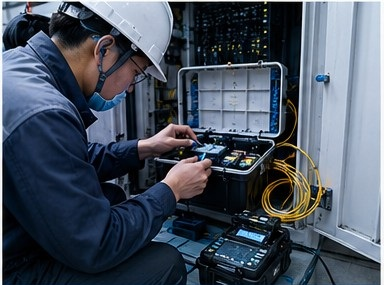

网络·通信·消防基础设施
有线/无线网络、消防安全、安防监控——构建可靠的现场基础设施
老旧的网络布线
现有网络布线混乱，故障排查困难
现场问题
很多工厂的现场网络经过多年扩建和改造，布线杂乱无章。一旦发生网络故障，排查范围大、定位耗时长，严重影响生产效率。而且扩展新设备时往往面临布线资源不足的问题。
出云创安的解决方案
重新规划和整理网络布线
我们深入现场进行布线现状调查，为客户设计并实施高标准的结构化布线方案，确保网络基础设施的可靠性和可维护性。
- ✓ 现场布线现状全面调查与记录
- ✓ Cat6A/Cat7高标准结构化布线
- ✓ 配线架端到端标识与测试
- ✓ 完整的竣工文档和布线图交付
脆弱的服务器环境
现场服务器房环境恶劣，设备故障频发
现场问题
很多工厂的服务器房缺乏专业的环境控制和管理。温度过高、灰尘积累、电源不稳定等因素导致服务器频繁宕机，关键业务系统中断，数据安全面临威胁。
出云创安的解决方案
搭建标准化的现场服务器环境
我们对服务器房进行全面评估和改造，提供从环境控制到配电管理的完整解决方案，确保核心系统稳定运行。
- ✓ 服务器房环境评估与改造方案
- ✓ 机柜布局设计与精密配电施工
- ✓ UPS电源与温控系统配置
- ✓ 服务器搬迁与系统恢复验证

瘫痪的光纤通信
光纤链路频繁中断，通信可靠性不足
现场问题
工厂主干光纤链路一旦中断，影响范围覆盖整个生产区域。传统单路由光纤缺乏冗余保护，维护时往往需要长时间停机，对连续生产造成巨大威胁。
出云创安的解决方案
构建高可靠光纤骨干网络
我们采用冗余设计和规范化施工标准，为客户构建高可靠、易维护的光纤骨干网络，确保通信链路的长期稳定运行。
- ✓ 多芯/多路由光纤冗余设计
- ✓ OTDR精确故障定位与测试
- ✓ ODF配线架规范端接与管理
- ✓ 光纤链路定期检测与维护